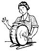
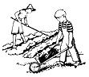

Housekeeping should be a challenging subject to us American women. Instead, many of us consider it with boredom, or with resentment that we have to do it at all - and if our husbands try to talk over our methods, we are likely to fly off the handle and wind up with the old come-back, "Well, I'd just like to see you take care of the house for a while!" I'm afraid I have to admit to just such arguments with Ed in the past, and to be honest, there is something to be said on both sides.
I do believe that there have been several things outstandingly wrong with modern housekeeping and that homesteading can answer some of our problems. The more important drawbacks I've found are:
(1) Our own attitude toward housekeeping is probably the key. I'm afraid that many of us look down our noses at it - we consider most any other job but homemaking glamorous. What we forget is that every job, whether it's a man's job or a career woman's job in office or factory, has its own monotonous routines, too.
(2) Lack of creative work in modern housekeeping. Women really can't be blamed for considering "housekeeping" a routine borethat's about all that's left of homemaking in the city or suburbs. I don't know how you classify your jobs, but, outside of raising children, I consider cooking about the only creative work left in most city and suburban homes today. The current trend seems to be for more and more of the family work, recreation and even child raising to be handled outside the home. All that will be left is vacuuming, washing dishes, and dusting - all negative and unstimulating.
(3) Lack of economic satisfaction. Since today's woman has been brought up to be independent, it's no wonder she's not satisfied with the eternal routine left in the home. She's not increasing her family's security unless it's in the negative way of cutting down expenses. Since the urban custom is to buy everything eaten, worn or used, it's no wonder urban women have begun to feel their best contribution to their families would be jobs outside the home.
(4) Lack of housekeeping efficiency. Manufacturers have done much to make housekeeping efficient and easy, but keeping house still needs a thorough engineering job done on it. The amount of your daily work is determined the minute you choose your house, the type of furnishings you put in it, the way you arrange your storage space and the type of clothes you buy. If we women want to contribute more to our families we will have to make routine work as efficient as possible.
What Does A Homestead Do To Housekeeping?
It makes a big difference in your housekeeping when you have a homestead. When I lived in the city I had no interest whatsoever in housework except for learning to cook elegant meals. I became so bored with apartment housekeeping I found a job in a large New York City department store. And did I add anything to Ed's and my security? I did not - for it took practically all my salary to provide adequate clothes for my job, lunches, bus fares, a part-time maid and other incidentals. Now that I am a partner on a homestead, housekeeping is just the routine part of a bigger job - not the be-all, end-all of my existence.
Of course you have much more to do on a country place than in the city. But these new jobs are stimulating, creative and varied. Think of the satisfaction of having a freezer stuffed with luscious food you helped raise yourself. Imagine your canning shelves laden with full, glistening jars - your handiwork.
And you can do all sorts of other things: separate milk to get heavy cream, make scrapple, make cheese, extract honey from the combs, (this is a 3-ring circus of fun!) and serve dinners of "home-raised" products that guests really appreciate!
There are also many pleasurable activities outdoors. The pigeons, geese and ducks, and all the new born goats can be your special projects. You'll help with the garden, have herbs and all the beautiful flowers you want. Someone has said, "He who lives with the land has innumerable professions." He is, for example veterinarian, farmer, gardener, animal husbandman, chemist, accountant, manager, weatherman, machinist and so on. That is equally true for the wife who shares homesteading activities.
Once you get started doing and making things for yourself you'll probably want to do even more - do more sewing for your housemake your own Christmas presents (we're raising popcorn this year for little remembrances) maybe even make some rugs or do weaving. You can also raise or make things for sale. Life will become a question of how can you do all that you want to do.
Because a homestead offers a woman an unlimited field of creative activities, it removes the complaints against housekeeping.
First, your own attitude is brighter and more interested.
Second, your work gives you pleasure and satisfaction because it is creative.
Third, you have that fine independent feeling of holding your security in your own. hands, and you'll take great pleasure in knowing your children are being well-fed and growing up in the most wholesome of surroundings.
Fourth, you are more of an executive and have more interest in increasing your efficiency.
In the book "Zero Storage" Mr. Sparkes, the author, describes the Fylers, a family of seven who have been homesteading and he sums up the economic point with this sentence. "For Mr. Fyler, one fact must be crystalclear: by reason of the land and the freezer, instead of one Fyler, seven are now helping to make the family living."
When Jackie gets a little older, there will be three Robinsons instead of two "bringing home the bacon." Before we started homesteading it was just Father!
Now For The Housekeeping Itself
It has taken me three years of "homesteading" to realize how ridiculous it is to judge a woman's housekeeping ability by whether or not her country house is spotless, with dishes and beds attended to by 10 a. m. Instead of ironing or dusting, you will want to pick strawberries that are just ripe, wrap a chilled lamb for the freezer or go fishing with your children. But your very annoyance with the routine tasks will give you the incentive to cut down the time they take. And when you tackle them with this sort of outlook, they immediately become more interesting!
It seems to me, proficiency in housekeeping falls into three main divisions:
(1) Layout and furnishing of your house.
(2) Equipment.
(3) Management and organization.
The House And What You Put In It
Architects are now beginning to realize that a woman's working areas should be laid out in an orderly, convenient way. I have begun to see more plans recently where washing, ironing, sewing, cooking and children's play areas are correlated instead of being scattered all over the house from attic to basement. Also on a homestead you will want to consider whether the bathroom is handy to the outdoors, whether there is plenty of space for outdoor clothes where you usually enter and whether there is sufficient place for country tools and equipment. The amount of your routine work is somewhat determined the minute you choose a house. If you should build a new house, there will be many new designs and ideas to choose from. For instance, new radiant heating (hot water pipes under the floor) not only provides a healthier heating plan, but it will mean less work for Mama - no dusting and no painting those unsightly dust catchers called radiators. Also floors over the heating pipes may well be tile - warmer in winter, cooler in summer. And if the floors are pretty and warm - why, fewer rugs to pay for or to clean.
If you already have a conventional house there are still plenty of things you can do to make housekeeping easier. On your floor you can use patterned or neutral colored rugs which don't show dirt quickly, or scatter rugs which can be picked up and washed. The floor itself is easier to clean if it's waxed and a vacuum cleaner can often be used on it to more advantage than a dust mop. Or if you have an old unsightly floor, spatter painting might be the answer to simple care. Wooden furniture collects less dust if it's waxed instead of polished with oil.
When it comes to upholstered furniture most of us know how much simpler it is to have slipcovers which can be removed and washed easily. And if you buy or make slipcovers, bedspreads and draperies out of material that doesn't have to be ironed, (say seersucker, monkscloth - rubber or aluminum cloth that can be washed with a hose) then you've saved yourself even more work. These are just a few samples of what you can do if you look at your work with a mental question mark.
I remember a city husband saying, "I don't want my wife to have any more gadgets to make her apartment keeping easier - she'll just spend more money shopping!" I guess it's true in the city that the more spare time you have the more money you spend, There's not much else to do.
On a homestead, however, spare time is time to use productively. Of course you can run into town but you don't want to go when you've got a garden to plant or the bees are getting ready to swarm or a new lamb is expected.
So machinery for housekeeping and homesteading jobs is a good investment, for you use this equipment to create more for your family. One homestead husband told me he would rather have an electric mixer with all its extra parts in his home than an automobile (granting that a car wasn't a vital necessity to his job).
Here are some specific ways to use equipment on a homestead like ours:
a) Cooking. The freezer is one of the greatest aids to cooking. While its primary function is to preserve raw food, it is a boon to better cooking management. While you're cooking stews, soups, beans, creamed foods, cakes, cookies or breads, it is easy to make double or triple batches and put part of them in the freezer for another meal. You can assemble a variety of dinners from soup to dessert, place each dinner in one bag or box and freeze it for future quick delivery. Lunches too can be prepared for the week and frozen each complete in a separate lunch box. I should mention that "a grocery store in your home" also saves a surprising amount of shopping time.
The electric mixer with all its parts is another wonderful aid to better and speedier cooking. Besides whipping up cakes, milk shakes, cream and meringues, the mixer can be used to squeeze oranges, grind coffee, peel potatoes and shell peas and beans.
The pressure cooker is a splendid contrivance. Ed discovered ours at the N. Y. World's Fair and considered it the most wonderful thing at the whole fair. The actual cooking time for a stew is just 15 minutes!
b) Dishwashing. The electric dish washer not only saves labor but also time because you store the dishes in the washer and run the machine once a day. But if you don't have a dishwasher, you can approach this chore somewhat as if you did have the appliance. In other words, washing the dishes after each meal is another one of those silly standards we have set up for ourselves. If you rinse the dishes, stack them, wash them once or twice a day, rinse with boiling water and towel-dry only the silver, you will save yourself almost as much time as the machine can save.
c) House cleaning. The vacuum cleaner can often be used to good advantage on the floors themselves and for more of the dusting jobs. However, cleaning can chiefly be simplified by the furnishings you choose and your own good management.
d) Washing And Ironing Clothes. Of course, we all know that washing is being reduced to the minimum by certain types of machines which wash, rinse, and even dry for you. As for ironing if you hang flat things like sheets and towels very smooth and straight, there's really no reason for ironing them at all. I have heard any' number of men and women say they loved to sleep between sheets fresh from the country-scented breezes. Such clothing as seersucker dresses and cotton knit shirts also need no ironing (or the very slightest touch) if they are hung carefully on the line. Those fabrics which insist on being ironed (and how many we can do without!) should be taken down while damp to save the sprinkling job. Notice how your ironing depends on your washing routine and both depend even more on how you shop. As one clever homesteader wife in Ohio wrote, "I begin my ironing when I do my shopping"
All in all I've found that housekeeping in the country can be run a little more like a business. Each housewife, as an executive (when the Boss is away) will want to do her own planning, adapting the schedule to the weather vane - whether there are raspberries just ready to pick or whether it's high time for a relaxing swim.
The women I've met who are interested in homesteading in the modern way are smart - they know that they will have a big job to do.
But they also know the rewards are tremendous.
|
 |
|
 |
|
|
|
|